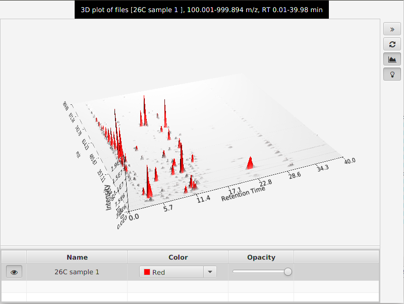
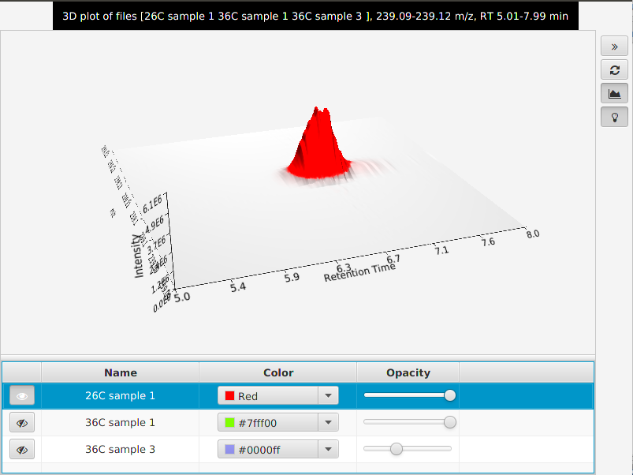

This tool presents a three dimensional plot where X axis represents the retention time, Y axis the m/z value and Z axis the intensity of the signal. This plot is the collection of all the information from the raw data in a graphical representation.
Additionally in the parameters window, the button "Set automatically" allows the user to set all the ranges automatically. MZmine will use the maximum ranges allowed by the raw data.
To zoom in and out, use the mouse wheel. Also by click left button and dragging the mouse, the user can "rotate" the plot in any direction. If right button is used instead, the user can "move" the plot to any position.

